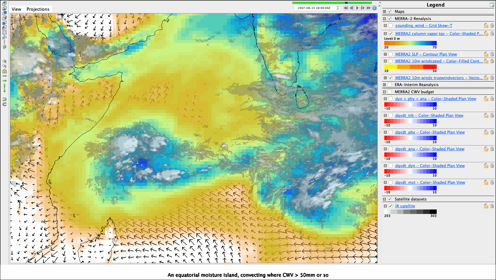
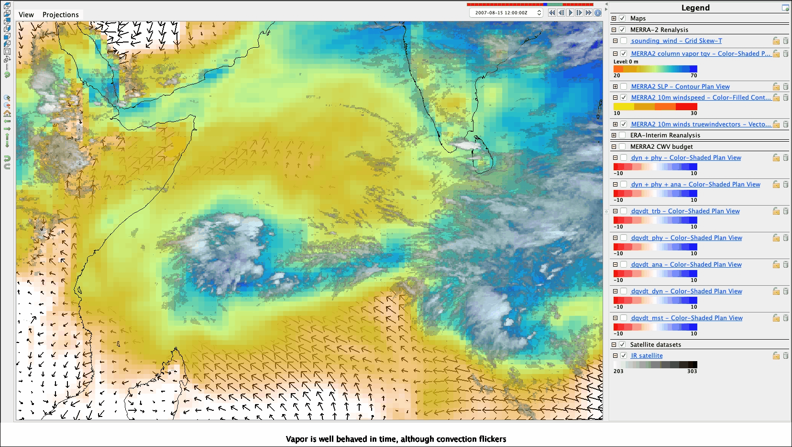
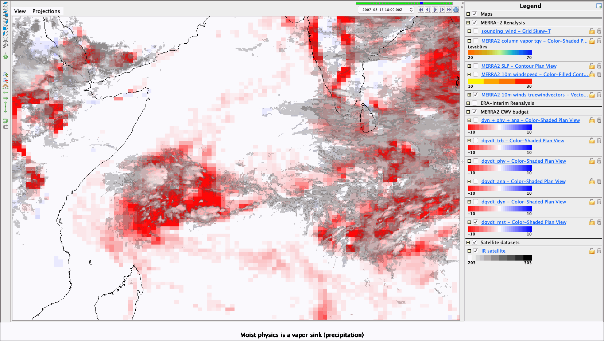
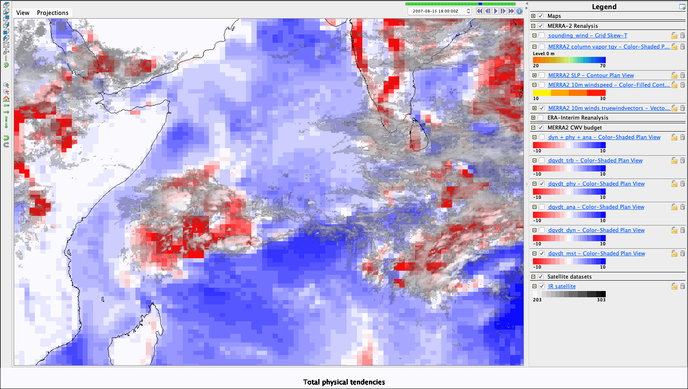
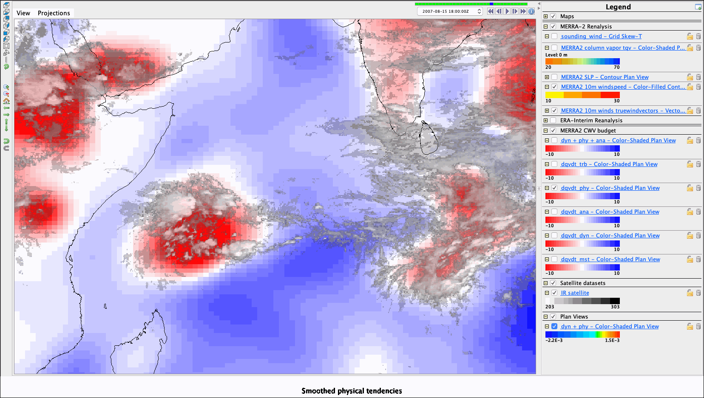
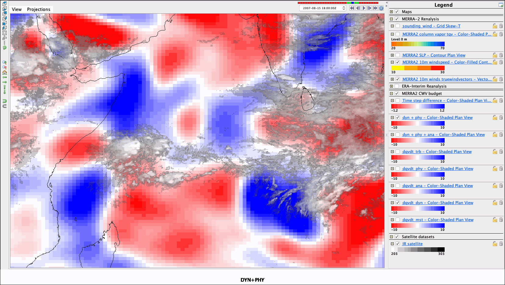
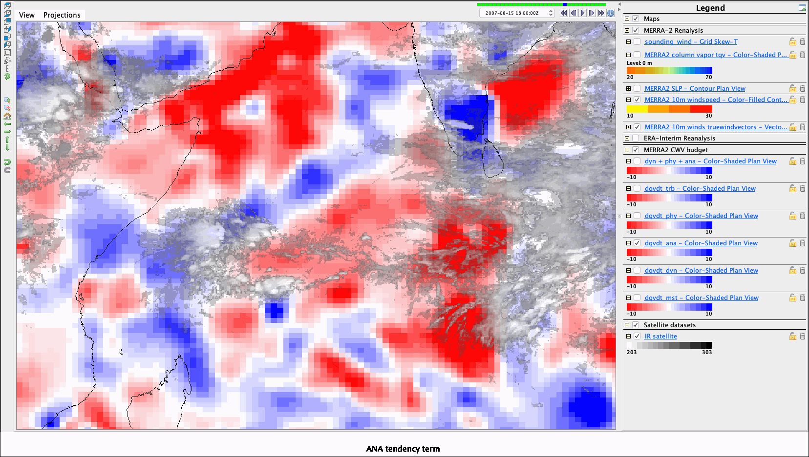
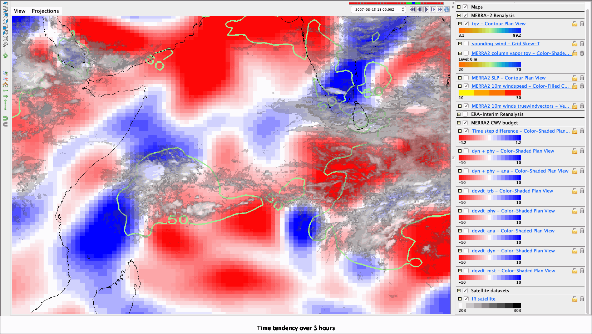
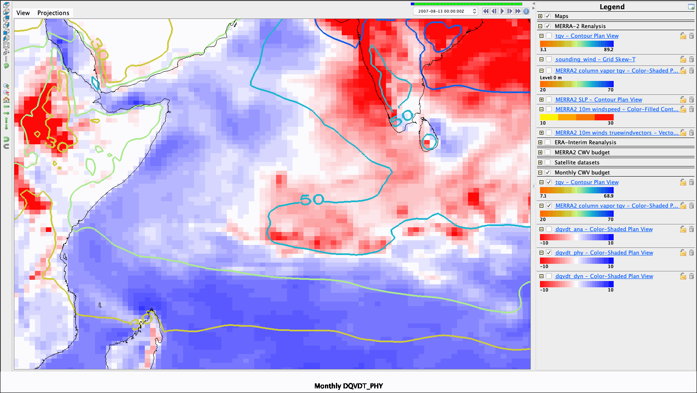
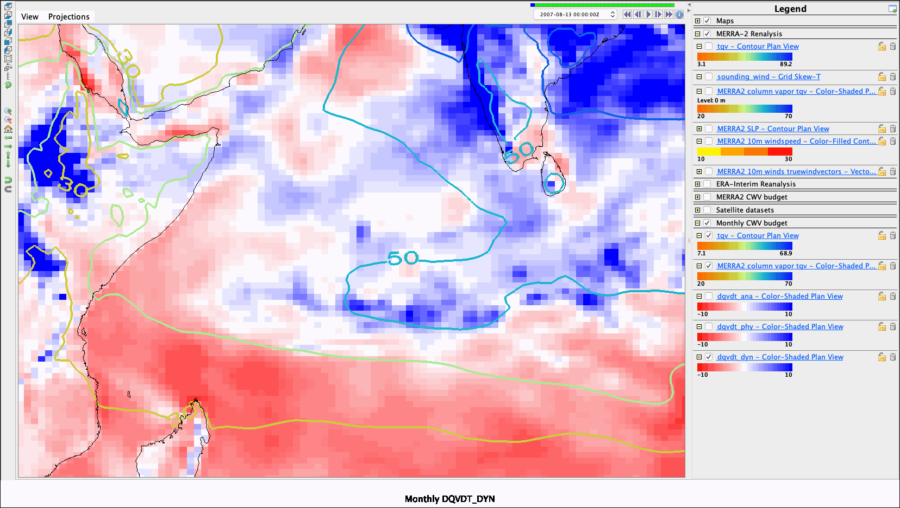

Right click to download this Notebook
Interactive online version:

DRILSDOWN Case Study: Equatorial “moisture island” budget in MERRA2
Notebook of IDV visualization session
Case dates: 2007-08 13th to 17th
Drilling down into the science of:
Mapes, Cheedela, Igel, Tsai 2019: The dynamics of water vapor islands over the western equatorial Indian ocean. In preparation
Sections¶
Instantaneous CWV and tendencies
DYN+PHY + ANA and d/dt(CWV)
Monthly version for this month
The cells below capture IDV session images and movies, captioned in a logical flow¶
[1]:
%reload_ext ipython_IDV
[7]:
%make_image -capture legend -caption "An equatorial moisture island, convecting where CWV > 50mm or so"

[24]:
%make_movie -capture legend -caption "Vapor is well behaved in time, although convection flickers"

The following shows dqvdt_mst on -10 t0 10 mm/d scale (red = drying)¶
[9]:
%make_image -capture legend -caption "Moist physics is a vapor sink (precipitation)"

## The following shows trb (evaporative source) ### Related to speed (yellow is speeds > 10m/s), but SST is quite importantly cool off Arabia evidently
[12]:
%make_image -capture legend -caption "Evaporation I take it, -10 to 10 mm/d color range"

The following shows total physics (E-P): mst is the sink (red), trb is the source (blue)¶
[11]:
%make_image -capture legend -caption "Total physical tendencies"

[19]:
%make_image -capture legend -caption "Smoothed physical tendencies"

The following shows dqvdt_dyn – moisture convergence/ vertical advection so big noisy!¶
[14]:
%make_image -capture legend -caption "DYN source, wildly saturates -10 to 10 mm/d color scale !?"

Dynamics dqvdt_dyn – still big even when smoothed, and big all over¶
[15]:
%make_image -capture legend -caption "DYN source, wildly saturates -10 to 10 mm/d color scale !?"

DYN+PHY pattern looks almost totally like DYN, albeit weaker a bit¶
[25]:
%make_image -capture legend -caption "DYN+PHY"

That leads us to dqvdt_ana – Analysis Tendency¶
[16]:
%make_image -capture legend -caption "ANA tendency term "

ANA term smoothed¶
[18]:
%make_image -capture legend -caption "ANA term smoothed"

Top
## Well, DYN + PHY + ANA does add up to the time tendency
[29]:
%make_image -capture legend -caption "DYN + PHY + ANA"

[28]:
%make_image -capture legend -caption "Time tendency over 3 hours"

ANA is the error in DYN+PHY, how coherent is it in space-time?¶
Piecewise constant in time for 6h (these frames are 3 hourly); diurnal, but just big and wild¶
[30]:
%make_movie -capture legend -caption "Analysis tendency"

Top
Monthly mean is so much more well behaved!¶
[42]:
%make_image -capture legend -caption "Monthly TQV"

# SST map
[43]:
%make_image -capture legend -caption "Monthly SST and TQV"

[41]:
%make_image -capture legend -caption "Monthly DQVDT_PHY"

[40]:
%make_image -capture legend -caption "Monthly DQVDT_DYN"

Monthly ANA smaller than PHY and DYN¶
But if it is viewed as “missing physics”, it seems to¶
1. moisten moist areas including the Tongue (is heating & ascent too top heavy in model?)
2. dry the Arabian littoral (is SST too warm in the model up there?)
SST monthly mean
3. Dry downwind of Sri Lanka (is the wind wake too weak in model?)
4. Dry on southern flank of Tongue (is evap too strong, perhaps inflow too surface-intensified?)
Evaporation, note southern flank of tongue
For exact replicability, capture a ~1 MB sized IDV state bundle and embed it in this notebook¶
[44]:
%save_bundle -embed
[51]:
# Time stamp this notebook
!date
Fri Mar 22 19:04:15 EDT 2019
Top
[ ]: